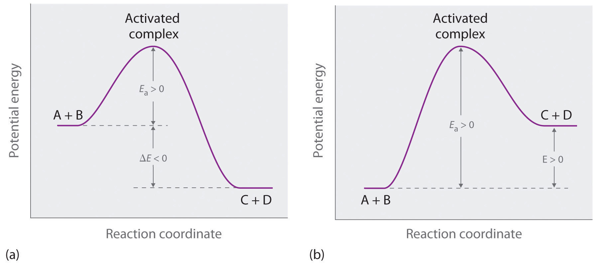

Contents
- Nuclear fusion
- Energy barriers
- On the Earth
- In the Sun
- Proton Proton chain
- Electron Tunneling
Nuclear fusion
Nuclear Fusion is the reaction in which 2 or more atomic nuclei are combined to form another different atomic nuclei and sub atomic particles (neutrons or protons).

Nuclear fusion can occur in elements below Fe-56. From the graph below on can notice that the average binding energy per nucleon is increasing until Fe-56, this means that any reaction that causes molecules lighter molecules to fuse towards Fe-56 would be more stable. The energy released in these converted from the mass defect (\(\delta m\)).
Where:
\[\delta m = \frac{E}{mc^2}.\]

Energy Barriers
An energy barrier is the minimum amount of energy required to cause the reaction. Every reaction like physical or chemical, has an energy barrier. An example of a chemical energy barrier would be the combustion reaction of propane. An example of a physical energy barrier would be hitting a egg hard enough to break it.

The above graph is a energy digram of a reaction and it is commonly used to represent chemical reactions. a) represents a exothermic reaction while b) represents an endothermic reaction. \(E_a\) represents the activation energy which is analogous to the energy barrier. Nuclear Fusion reactions are considered exothermic reactions as they release energy.
Coloumb Forces

In Nuclear Fusion, the energy barrier is represented by Coloumb Forces. They are the electrostatic forces of repulsion found between the 2 positively charged nuclei. Naturally 2 negatively charged nuclei would repel and as such be as far apart from each other as possible. Energy must be input into the system to bring the like charges together.
The Coloumb forces and the potential energy can be modelled by the following equations:
\[F = \frac{k q_1 q_2}{r^2}\]
\[U = -\frac{k q_1 q_2}{r}\]
Strong Forces
It is impossible for larger nuclei to form if there is only a repulsive Coloumbs Force. There is another force at play in Nuclear Fusion. It is the Strong Nuclear Force. As the name implies the strong nuclear force is a strong (literally) force that occurs in the nucleus of atoms. This force is short ranges, meaning it has a large magnitude at close distances but its magnitude falls of extremely quickly, faster than the Coloumbs Force.

The overall force equation would be as follows:
\[F_{net} = -F_{coloumbs} + F_{strong}\]
Where there would be an attractive force when \(F_{net}\) is positive, and a repulsive force when \(F_{net}\) is negative.
Notice that after overcoming the repulsive Coloumb Forces at a long range (Energy Barrier), at a sufficiently close range between the nuclei, the magnitude Strong Force would be larger than that of the Coloumbs Force. This results in a attractive force between nuclei, resulting in fusion.
On the Earth
Temperature to Kinetic Energy
As you have probably learnt before, temperature is proportional to kinetic energy. The faster the particles in a material vibrate (ergo. more KE), the higher its temperature. It is important to note that there is a distinction between the 2. Kinetic energy is a properity of every single atom while Temperature is a collective property. (There can be no temperature to a single atom)
A temperature is indicative of the average vibrational speed. Every paricle in an object does not vibrate at that same speed due to random nudges and bumps causing some of the particles to be faster while others would be slower.

Above is a graph showing the distrubtion of the particle velocities at different temperatures. Notice that as the temperature increases, the curve flattens and shifts to the left. This means that at high temperatures, a higher proportion of the particles are moving at higher speeds. The proportion of particles that have Kinetic Energy larger than \( E_a \) would be able to undergo the fusion reaction.
Reactors on the Earth
In the world, Nuclear Fission is much more popular than Nuclear Fusion. There are so many instances of operational Nuclear Fission Plants that React Uranium-238 or Plutonium, but there has never been a single Nuclear Fusion Plant. Why is that so?

TO answer the questions we need to run some calculations...Redementary calculations show that approximately {} energy is required to Fuse 2 Hydrogen nuclei. This may not seem like a lot of energy but becomes notiable of converting into particle collision speeds
In the Sun
Stars are formed by large clouds of interstellar gas coalescing into a giant ball of plasma. This ball of gas must be massive enough for it to pull itself into a sphere shape and compress the gases until Nuclear fusion can occur

Did you know, The sun is a star. Yes it is a star that has a shocking mass of 1 solar mass (I wonder why). It is a yellow star in the main sequence. The Sun's radius is about 695,000 kilometers, or 109 times that of Earth. Its mass is about 330,000 times that of Earth, comprising about 99.86% of the total mass of the Solar System.Roughly three-quarters of the Sun's mass consists of hydrogen (~73%); the rest is mostly helium (~25%), with much smaller quantities of heavier elements, including oxygen, carbon, neon, and iron.
Proton Proton Chain

Nuclear Fusion in the Sun and other stars of similar weigh occurs by the Proton Proton Chain. As you can see, the Sun's main source of fuel is Hydrogen, and its product is He. This is why most of Sun's mass is H or He.
Notice that the surface temperature of the Sun is 5500K, and 15000000K at its core. These temperatures are not sufficiently high for Fusion to occur. Yet, every second, the Sun's core fuses about 600 million tons of hydrogen into helium, and in the process converts 4 million tons of matter into energy.
Quantum Mechanics
Quantum mechanics is a fundamental theory in physics that provides a description of the physical properties of nature at the scale of atoms and subatomic particles.
Classical physics, the collection of theories that existed before the advent of quantum mechanics, describes many aspects of nature at an ordinary (macroscopic) scale, but is not sufficient for describing them at small (atomic and subatomic) scales. Most theories in classical physics can be derived from quantum mechanics as an approximation valid at large (macroscopic) scale.
Quantum mechanics differs from classical physics in that energy, momentum, angular momentum, and other quantities of a bound system are restricted to discrete values (quantization), objects have characteristics of both particles and waves (wave-particle duality), and there are limits to how accurately the value of a physical quantity can be predicted prior to its measurement, given a complete set of initial conditions (the uncertainty principle).
This results in a few interesting phenonomena:
- Wave particle duality
- Quantum Tunnelling
- Quantem Entanglement
In this website, we will be focusing on specifically on the properties of Quantum Tunneling and how it relates to fusion in the sun.
Wave Function
A wave function in quantum physics is a mathematical description of the quantum state of an isolated quantum system. The wave function is a complex-valued probability amplitude, and the probabilities for the possible results of measurements made on the system can be derived from it. The most common symbols for a wave function are the Greek letters ψ and Ψ (lower-case and capital psi, respectively).
The wave function is a function of the degrees of freedom corresponding to some maximal set of commuting observables. Once such a representation is chosen, the wave function can be derived from the quantum state.
For a given system, the choice of which commuting degrees of freedom to use is not unique, and correspondingly the domain of the wave function is also not unique. For instance, it may be taken to be a function of all the position coordinates of the particles over position space, or the momenta of all the particles over momentum space; the two are related by a Fourier transform. Some particles, like electrons and photons, have nonzero spin, and the wave function for such particles include spin as an intrinsic, discrete degree of freedom; other discrete variables can also be included, such as isospin. When a system has internal degrees of freedom, the wave function at each point in the continuous degrees of freedom (e.g., a point in space) assigns a complex number for each possible value of the discrete degrees of freedom (e.g., z-component of spin) – these values are often displayed in a column matrix (e.g., a 2 × 1 column vector for a non-relativistic electron with spin 1⁄2).
According to the superposition principle of quantum mechanics, wave functions can be added together and multiplied by complex numbers to form new wave functions and form a Hilbert space. The inner product between two wave functions is a measure of the overlap between the corresponding physical states and is used in the foundational probabilistic interpretation of quantum mechanics, the Born rule, relating transition probabilities to inner products. The Schrödinger equation determines how wave functions evolve over time, and a wave function behaves qualitatively like other waves, such as water waves or waves on a string, because the Schrödinger equation is mathematically a type of wave equation. This explains the name "wave function", and gives rise to wave–particle duality. However, the wave function in quantum mechanics describes a kind of physical phenomenon, still open to different interpretations, which fundamentally differs from that of classic mechanical waves.[1][2][3][4][5][6][7]
In Born's statistical interpretation in non-relativistic quantum mechanics,[8][9][10] the squared modulus of the wave function, |ψ|2, is a real number interpreted as the probability density of measuring a particle as being at a given place – or having a given momentum – at a given time, and possibly having definite values for discrete degrees of freedom. The integral of this quantity, over all the system's degrees of freedom, must be 1 in accordance with the probability interpretation. This general requirement that a wave function must satisfy is called the normalization condition. Since the wave function is complex-valued, only its relative phase and relative magnitude can be measured—its value does not, in isolation, tell anything about the magnitudes or directions of measurable observables; one has to apply quantum operators, whose eigenvalues correspond to sets of possible results of measurements, to the wave function ψ and calculate the statistical distributions for measurable quantities.
Quantum Tunneling
uantum tunnelling, also known as tunneling (US) is a quantum mechanical phenomenon whereby a wavefunction can propagate through a potential barrier.
The transmission through the barrier can be finite and depends exponentially on the barrier height and barrier width. The wavefunction may disappear on one side and reappear on the other side. The wavefunction and its first derivative are continuous. In steady-state, the probability flux in the forward direction is spatially uniform. No particle or wave is lost. Tunneling occurs with barriers of thickness around 1–3 nm and smaller.[1]
Tunneling may be explained in terms of the Heisenberg uncertainty principle in that a quantum object can be known as a wave or as a particle in general. In other words, the uncertainty in the exact location of light particles allows these particles to break rules of classical mechanics and move in space without passing over the potential energy barrier.
hough this probability is still low, the extremely large number of nuclei in the core of a star is sufficient to sustain a steady fusion reaction.